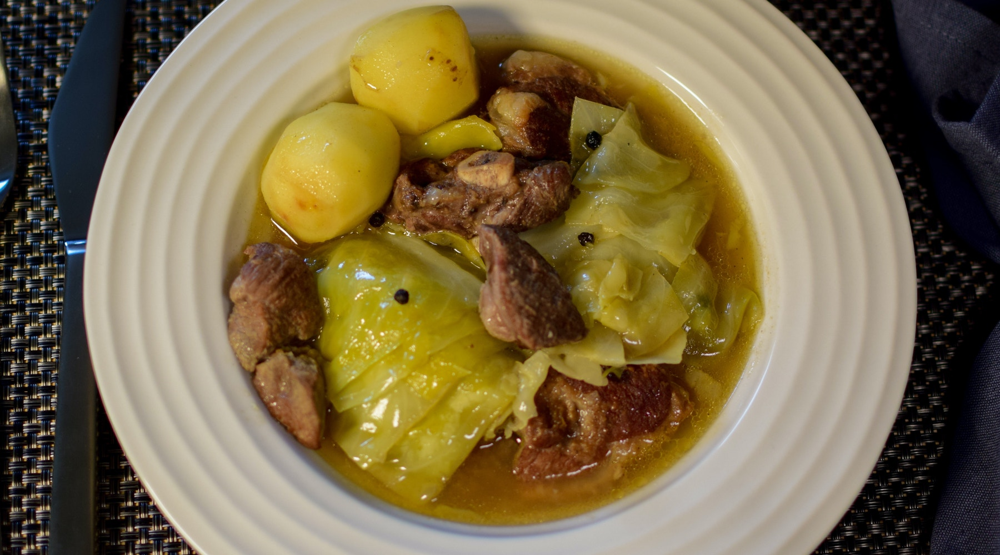

Fårikål
Fårikål er Norges nasjonalrett, og oppskriften er enkel. Legg kjøtt og kål lagvis i gryta med salt og pepper mellom lagene, og kok til det er mørt.
Oppskrift (4 – 6 personer)
2 1/2 kg fårekjøtt med bein
3 kålhoder
20 sorte pepperkorn
6 ss mel
Salt etter smak
Kokte poteter til servering
Del kålhodene i båter og legg dem lagvis med fårekjøttet, samt salt, mel og pepperkorn i en romslig kasserolle.
Fyll på med vann til det gjenstår 5 cm fra å dekke kålen og kjøttet.
Kok under lokk til kjøttet er mørt, ca. 2 timer.
Skum av overflødig fett og skum underveis, og pass på at kasserollen ikke koker tørr.
